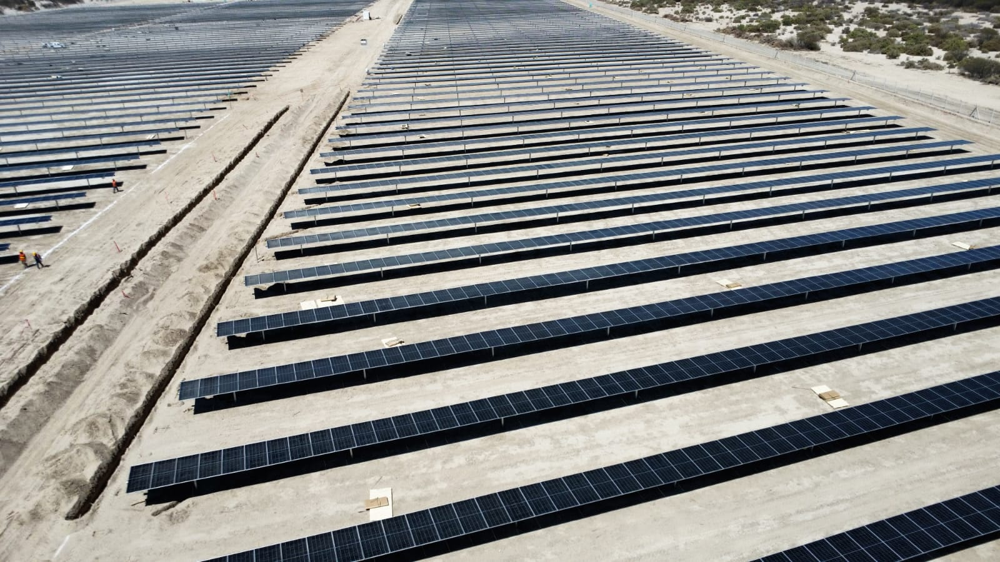
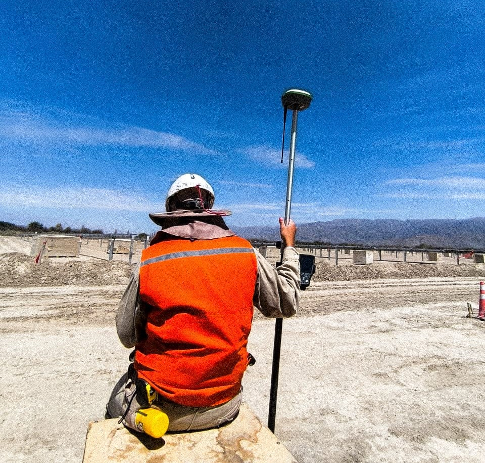

Grandes Superficies
Estudios Industriales
Replanteo en lotes de más de 360 ha con determinación de coordenadas precisas, estudio de títulos y elaboración de planos de mensura.
Trabajo realizado con equipos GNSS de doble frecuencia en modo RTK y post-proceso, logrando precisiones centimétricas en superficies extensas con terreno de difícil acceso.
Superficie
+360 hectáreas
Tecnología
GNSS RTK